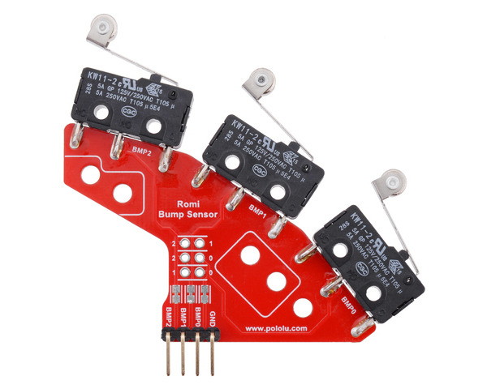
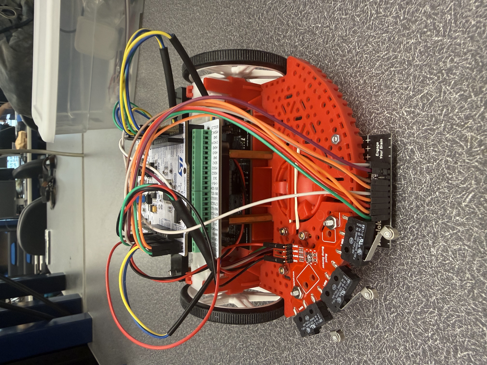
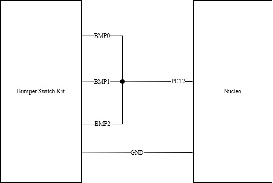

Bump Sensor
In addition to line following, our robot required a reliable method to detect physical obstacles (the wall) and trigger a recovery maneuver. A bump sensor was selected as a simple and robust solution for contact-based detection. Compared to alternatives such as infrared or ultrasonic sensors, a bump sensor provides immediate and unambiguous feedback upon collision without requiring signal processing or calibration. This makes it well-suited for short-range interaction tasks such as wall detection.
The selected bump sensor is a Pololu Bumper Switch Set for Romi/TI-RSLK MAX. It should be noted that we only used one sensor from the pair included in the product, as components were sourced from previous course materials. We thank Katherine Meezan for providing the sensor used in this project.
{kind=link}

Sensor Justification
A bump sensor was chosen due to its simplicity, reliability, and fast response time. Unlike distance sensors, which can suffer from noise or require filtering, the bump sensor provides a clear digital signal indicating contact. This reduces computational overhead and simplifies integration with the finite state machine.
Additionally, the sensor’s mechanical design includes three contact “arms,” allowing it to detect collisions across a wider frontal area. This increases robustness to misalignment and ensures that the robot can detect obstacles even if the point of contact is not perfectly centered.
Mounting
The bump sensor was mounted at the top front of the Romi chassis using screws and nuts. As this was the last piece of hardware to be mounted, it was difficult to center the bump sensor directly over the front of Romi. However, we managed to position the sensor such that at its furthest of the three contact arms extended over the line sensor and chassis. This placement ensures that collisions during forward motion are reliably detected.
{kind=link}

Wiring
The bump sensor provides a digital output signal corresponding to contact. Since the three contact arms operate independently but serve the same purpose in this application, their outputs were electrically combined (soldered) to produce a single unified signal. This reduced the number of required input pins and simplified the software interface.
The combined output was connected to a digital input pin on the Nucleo configured with an internal pull-up resistor and interrupt capability. A falling edge interrupt was used to detect a bump event, allowing immediate response without continuous polling.
This configuration provides a simple and efficient interface for integrating contact detection into the robot’s control system.
{kind=link}
